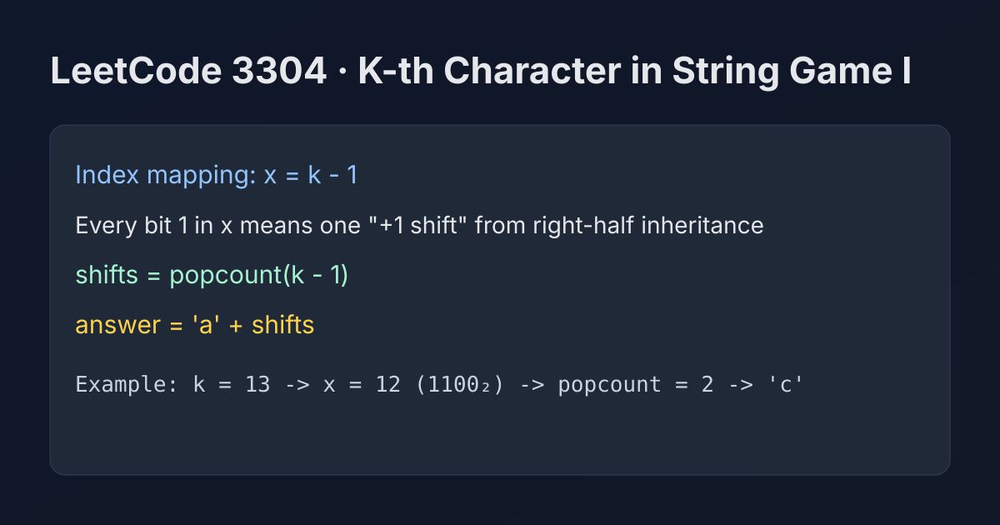

LeetCode 3304: Find the K-th Character in String Game I (Bit Count Shift Insight)
LeetCode 3304Bit ManipulationMathToday we solve LeetCode 3304 - Find the K-th Character in String Game I.
Source: https://leetcode.com/problems/find-the-k-th-character-in-string-game-i/

English
Problem Summary
Start from word = "a". In each operation, append a transformed copy where every character is shifted by +1 in alphabet order (z wraps to a). Return the k-th character in the infinite process result.
Key Insight
You do not need to build the string. For position k (1-indexed), let x = k - 1. Every set bit in x means this position came from an "appended shifted half" once, so total shifts equal popcount(x). Final answer is 'a' + popcount(k - 1).
Algorithm
- Compute x = k - 1.
- Count set bits in x.
- Return character (char)('a' + bits).
Complexity Analysis
Time: O(log k) (bit counting).
Space: O(1).
Common Pitfalls
- Treating k as 0-indexed directly (must use k-1).
- Simulating full string growth, which is unnecessary.
- Forgetting this problem's result stays within lowercase letters for constraints.
Reference Implementations (Java / Go / C++ / Python / JavaScript)
class Solution {
public char kthCharacter(int k) {
int shifts = Integer.bitCount(k - 1);
return (char) ('a' + shifts);
}
}import "math/bits"
func kthCharacter(k int) byte {
shifts := bits.OnesCount(uint(k - 1))
return byte('a' + shifts)
}class Solution {
public:
char kthCharacter(int k) {
int shifts = __builtin_popcount(k - 1);
return static_cast<char>('a' + shifts);
}
};class Solution:
def kthCharacter(self, k: int) -> str:
shifts = (k - 1).bit_count()
return chr(ord('a') + shifts)var kthCharacter = function(k) {
let x = k - 1;
let shifts = 0;
while (x > 0) {
x &= (x - 1);
shifts++;
}
return String.fromCharCode('a'.charCodeAt(0) + shifts);
};中文
题目概述
初始字符串是 "a"。每次操作把当前串的每个字符做 +1 变换后拼接到末尾（z 回到 a）。求最终过程中的第 k 个字符。
核心思路
不需要真的构造字符串。对第 k 位（1 下标），令 x = k - 1。x 的每个二进制 1，都表示该位置在某一层来自右半部分（即被整体 +1 一次），所以总位移次数就是 popcount(x)。答案即 'a' + popcount(k - 1)。
算法步骤
- 计算 x = k - 1。
- 统计 x 的 1 的个数。
- 返回字符 (char)('a' + bits)。
复杂度分析
时间复杂度：O(log k)（统计二进制位）。
空间复杂度：O(1)。
常见陷阱
- 把 k 直接当 0 下标使用（应先减 1）。
- 误以为必须完整模拟字符串增长。
- 忽略题目约束下结果始终在小写字母范围内。
多语言参考实现（Java / Go / C++ / Python / JavaScript）
class Solution {
public char kthCharacter(int k) {
int shifts = Integer.bitCount(k - 1);
return (char) ('a' + shifts);
}
}import "math/bits"
func kthCharacter(k int) byte {
shifts := bits.OnesCount(uint(k - 1))
return byte('a' + shifts)
}class Solution {
public:
char kthCharacter(int k) {
int shifts = __builtin_popcount(k - 1);
return static_cast<char>('a' + shifts);
}
};class Solution:
def kthCharacter(self, k: int) -> str:
shifts = (k - 1).bit_count()
return chr(ord('a') + shifts)var kthCharacter = function(k) {
let x = k - 1;
let shifts = 0;
while (x > 0) {
x &= (x - 1);
shifts++;
}
return String.fromCharCode('a'.charCodeAt(0) + shifts);
};
Comments